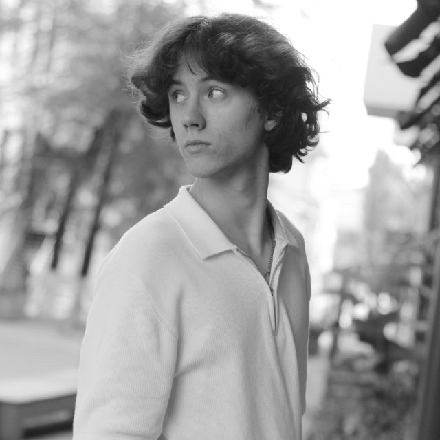
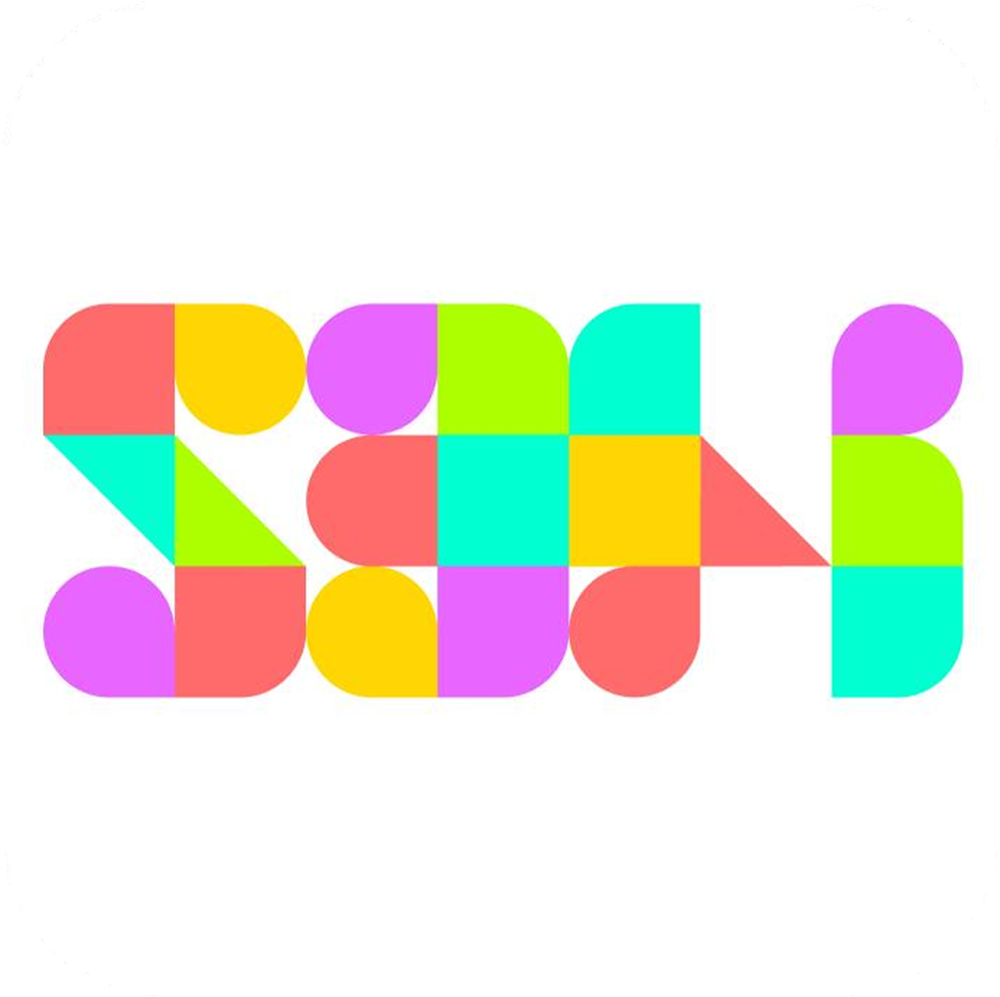

Графический дизайн · открытый к проектам
Привет,
я Глеб.
Создаю постеры, логотипы и визуальные эксперименты — сейчас исследую интерфейсы и новые способы рассказывать истории.
Смотреть проекты+в дизайне

ГЛЕБ · ВИЗУАЛЬНАЯ ПРАКТИКАПРОБА ФОРМЫ
собираю в визуальный язык
Выборка из портфолио
Работы,
собранные в истории.
Архив визуальных поисков
Остальные
наброски и серии.

в дизайне не фото для резюме,
а я — как есть
Обо мне · 18 лет
Дизайн —
это поиск.
Больше трёх лет создаю постеры, логотипы и визуальные эксперименты. Сейчас пробую новые направления, изучаю веб-дизайн и интерфейсы.
Дизайн начался как увлечение и постепенно становится всё более важной частью моей жизни. Я открыт к интересным проектам: новая задача — это практика, опыт и повод посмотреть на привычное по-другому.
В основе портфолио — личные, учебные и некоммерческие работы.
Открыт к новым проектам
Есть идея?
Давай придадим ей форму.
Напиши мне — обсудим задачу, визуальный язык и с чего начать.
Telegram